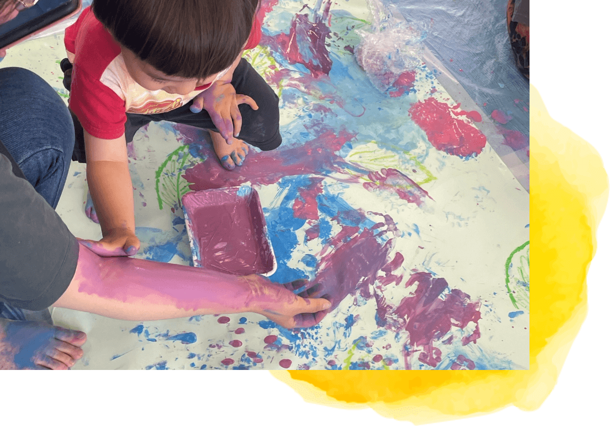
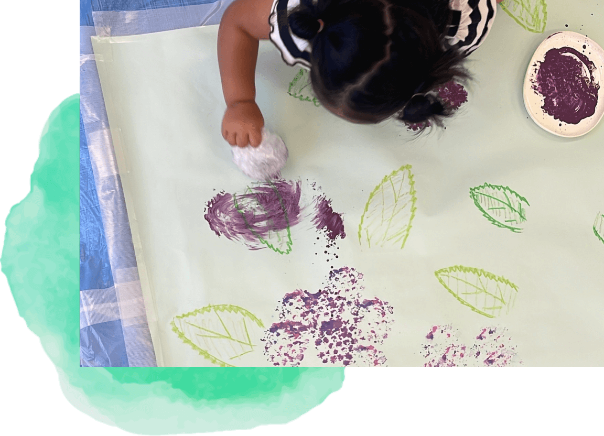
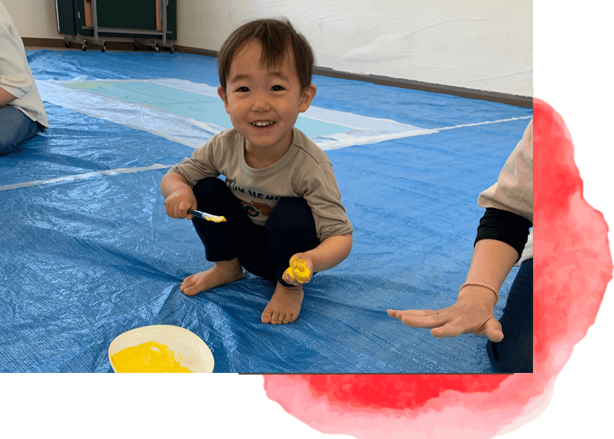

COEURについて
コンセプト
-

非認知能力を育てる
アートで非認知能力を育てる秘訣、それは子どもたちへの声かけです。子どもたち自身では思うように出来なかったと思った時も、私たちの声かけで「全部失敗じゃなくて、ここはできたな」と良い部分を見つけられるようになっていきます。
そうして育つのがチャレンジ力や自己肯定感、共感力や自己回復力といった非認知能力です。 -

季節を感じる感性を育てる
季節に応じたプログラムもご用意しています。作品の制作と運動遊びの両面を取り入れ、季節を肌で感じる遊びを行います。
特に人気の持ち帰り作品制作は、お家でも楽しめると好評です。子どもたちの成長の記録としても喜ばれています。 -

遊びの中で楽しく脳育
ダイナミックな絵の具遊びを通して、手足で絵の具の触感を楽しみます。ローラーや刷毛、筆、布などの道具を使うことで、手首や指の運動を促し、五感を刺激します。
運動遊びでは、バランス感覚を育てる遊びを中心に行います。 お家ではなかなかできない、体をめいいっぱい使った遊び方で、子どもたちの脳を刺激し、楽しみながら発達を促します。
ごあいさつ
「非認知能力を育むアート遊び」と聞くと、初めはちょっと身構えてしまうかもしれません。でも実際に体験してみると、ただただ絵の具にまみれて遊んでいるだけだったりします。「それだけ？」と思われるかもしれませんが、子どもたちが”無心になって遊ぶこと”、それこそが非認知能力を伸ばすのです。
習い事として体験したい、他の子との関わりの場として利用したい、歳の近い子を持つママ友作りをしたい、お家ではできない体験を一緒にしてみたいなど、どんなきっかけでも大丈夫。
是非一度、体験にいらしてください。心よりお待ちしております。
代表樋上 菊子